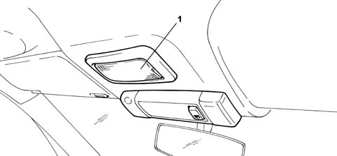

Introduction - BODYSHELL INTERIOR TRIMS AND FITTINGS
- Path
- Descriptions > 70 FITTINGS > 7040 BODYSHELL INTERIOR TRIMS AND FITTINGS > Introduction - BODYSHELL INTERIOR TRIMS AND FITTINGS
- Kind
- system description
- Applies to
- all engines; all production periods
- Interactive page
- https://sloeber94.github.io/elrnDB-fPnd/en/#/2753492
Applies to: all engines; all production periods
All vehicle interior trim is designed to satisfy severe international flame-resistance standards. The main components are slow-burning: they do not ignite due to accidental contact (for example, if a cigarette is dropped), flames do not develop and, in the presence of fierce heat they burn to produce strong, dense smoke. Trim design and configuration is aimed at producing a high level of acoustic comfort combined with a high degree of passive safety. All the protrusions that could harm car occupants in the case of impact have been eliminated.
Symbols describing the correct use of the baby seat in the presence of a passenger air bag are shown on the inner side of the passenger side sun visor 5580C air bag system.
Applies to: all engines; all production periods
FRONT COURTESY LIGHT
View of front courtesy light

1 - Front courtesy light
Applies to: all engines; all production periods
FRONT COURTESY LIGHT
The front courtesy light comprises a rocker switch, and it contains a light bulb.
The courtesy light is switched on/off as follows:
- to switch on the courtesy light permanently, press the switch on the right;
- to switch off the courtesy light, press the switch on the left;
- for automatic management from the body computer node, keep the switch in the central position.
The body computer node switches the courtesy light on in the following conditions:
- when any door (front or rear) is opened, for a maximum of 3 minutes; it is reactivated whenever a door is opened;
- when the ignition key is removed, for a maximum of 10 seconds;
- when the doors are unlocked (by the remote control or the driver's/passenger's door catch), for a maximum of 15 minutes;
- when the ignition is turned off, for a maximum of 10 seconds;
- when the inertial switch intervenes, for a maximum of 15 minutes.
The body computer node automaticallly switches off the courtesy light under the following conditions:
- when the ignition is turned on;
- when the doors are unlocked (by the remote control or the driver's/passenger's door catch);
- when the inertia switch is reset.
The rear courtesy light is switched on or off respectively when the tailgate is opened or closed.